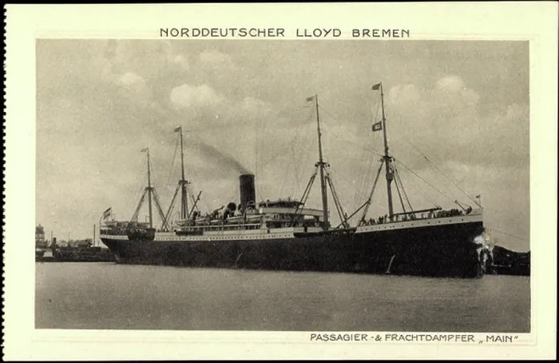

30 April 1863, Perjamosch, in the Banat SUPPORTED (Perjamosch family-book data, via the Dreyer database; early-October notes gave 1 May — superseded by the family-book read. The Perjamosch registers on FamilySearch end in 1842, so no baptism register image exists for her.)
Died
27 August 1937, Cincinnati, Ohio SUPPORTED (her obituary in the Cincinnati Enquirer of 29 August 1937 and her Find a Grave memorial agree on Friday, 27 August 1937, and a reported Ohio death certificate gives the same date; the certificate image itself has not been read, and a 1939 listing also circulates with no supporting record)
Buried
Saint Joseph Cemetery, Cincinnati — Section 25, Grave 2278 SUPPORTED (Find a Grave memorial 154889249; the same cemetery where her husband Johann is buried, though he has no memorial there)
Married
Johann Lorch — no marriage record has been found; it presumably took place in Perjamosch before they emigrated, and no date or place is entered on the tree sites
Immigration
Sailed from Bremen aboard the Main with her daughter Margit, reaching Baltimore 24 August 1907 DOCUMENTED (passenger manifest, List 61, lines 4–5, corroborated by Soundex cards; her husband had sailed alone on the Brandenburg a year earlier)
Occupation
No occupation recorded (an October audit note and her WikiTree profile call her a laundress, but the record behind that label was not filed — see Research Notes)
Religion
Catholic DOCUMENTED (Perjamosch was a Catholic parish; her funeral included a Requiem high mass at St. Joseph of Nazareth Church, and her obituary names her a member of the St. Elizabeth Society)
The family-book data names her father Mathias Novak; a reported death certificate names Henry Novak. The profile carries them as one man, with Henry as his middle name, and the two forms are never split into two men — but the certificate image itself has not been read. Geni gives no usable birth years for either parent (its "estimated between 1798 and 1858" is a placeholder range), so no years are shown here. WikiTree never created profiles for them, because it requires a date and none is verified.
Spouse
Johann Lorch (1862–1911), married before emigration
Johann is the only spouse shown for Theresa on Geni, and no other marriage is known for her. She was widowed in 1911 and lived the rest of her life in Cincinnati.
Children
Anna Lorch (born 7 April 1888, Perjamosch; emigrated to Cincinnati in 1906; married a Rennich — her mother died at her home, 3130 Glendora Avenue, Cincinnati) SUPPORTED Margaret Lorch (born 29 June 1893; emigrated with her mother in 1907; married Peter Palmer in Cincinnati) DOCUMENTED
The research folder names these two children. The Perjamosch family book, which would list the full family, has not been pulled — so this is the folder's roster, not a claim that there were only two.
Siblings
Not extracted — no siblings are named in the couple's research folder, and none are shown on Geni. (Not the same as none existing.)
30 April 1863 · age 0 Born, Perjamosch, Banat SUPPORTED (Perjamosch family-book data, via the Dreyer database)
9–24 August 1907 · age 44 Sailed Bremen → Baltimore aboard the Main with her daughter Margit DOCUMENTED (passenger manifest, List 61, lines 4–5; Soundex cards corroborate)
1920 · age 56 Living in her daughter Margaret and Peter Palmer's Cincinnati household, widowed SUPPORTED
27 August 1937 · age 74 Died at her daughter Anna Rennich's home, 3130 Glendora Avenue, Cincinnati SUPPORTED (obituary, Cincinnati Enquirer, 29 August 1937)
30 August 1937 Funeral from Riedlinger funeral home, 19 Green Street; Requiem high mass at St. Joseph of Nazareth Church SUPPORTED (obituary)
1937 Buried, Saint Joseph Cemetery, Cincinnati — Section 25, Grave 2278 SUPPORTED (Find a Grave memorial 154889249)
Life Story
Theresa Novak was born on 30 April 1863 in Perjamosch, in the Banat, the daughter of Mathias Henry Novak and Elisabeth Schisler. She married Johann Lorch, presumably in Perjamosch, though no marriage record has been found and no date or place is entered on the tree sites. Her husband sailed alone for America in 1906; a year later, on 9 August 1907, Theresa boarded the Main at Bremen with her younger daughter Margit — Margaret — and reached Baltimore on 24 August 1907. The manifest lists her as "Lorch, Therez," 32 and married, and Margit as 14 and single. The manifest age understates hers — she was 44 — as manifest ages for adult women routinely were; the identification rests on the uncommon surname, on Margit matching Margaret's documented birth, on her married status, and on Soundex cards that independently record the same arrival.
She lived her later years in Cincinnati, in her children's households — in 1920 in her daughter Margaret and Peter Palmer's household, widowed since Johann's death in 1911. She died on Friday, 27 August 1937, at the home of her elder daughter Anna Rennich, 3130 Glendora Avenue, Cincinnati, aged 74. Her funeral followed on Monday, 30 August, from Riedlinger funeral home, with a Requiem high mass at St. Joseph of Nazareth Church; her obituary names her a member of the St. Elizabeth Society. She is buried in Saint Joseph Cemetery, Cincinnati, Section 25, Grave 2278 — the same cemetery where Johann is buried, though he has no memorial there.
No photograph of Theresa herself has been found. Her gallery holds the Main postcard from her crossing and the photograph of her grave marker.
Gallery

The S.S. Main of the Norddeutscher Lloyd, Bremen — period postcard. VERIFIED by the passenger manifest: Bremen 9 August 1907 → Baltimore 24 August 1907, List 61, lines 4–5 — "Lorch, Therez," 32, married, and "Lorch, Margit," 14, single. The card shows the ship herself, not a photograph of Theresa's crossing. Theresa only: her husband Johann crossed on the Brandenburg in 1906, not on this ship.Theresa Lorch's marker, Saint Joseph Cemetery, Cincinnati: "Mother / Theresa Lorch / 1863 ✕ 1937" (Find a Grave memorial 154889249).
Sources and Evidence
Passenger manifest, S.S. Main, Bremen → Baltimore, List 61, lines 4–5: "Lorch, Therez," 32, married, and "Lorch, Margit," 14, single; arrived Baltimore 24 August 1907; corroborated by Soundex cards recording Theresa and Margit arriving Baltimore the same day DOCUMENTED
Obituary, The Cincinnati Enquirer, Sunday, 29 August 1937: Theresa Lorch (née Novak), "wife of the late John Lorch," died Friday, 27 August 1937 at her daughter Anna Rennich's home, 3130 Glendora Avenue, aged 74; funeral Monday, 30 August, from Riedlinger funeral home, 19 Green Street, with Requiem high mass at St. Joseph of Nazareth Church; member of the St. Elizabeth Society. (Paraphrased from the memorial photograph of the obituary, read with my own eyes; image via Find a Grave memorial 154889249.) SUPPORTED
Find a Grave memorial 154889249, Theresa Novak Lorch: born 1863, died 27 August 1937, Cincinnati; buried Saint Joseph Cemetery, Cincinnati, Section 25, Grave 2278; stone photograph and obituary image on the memorial page SUPPORTED
Dreyer Banat Ship List, Perjamosch section (family-book data): "LORCH Theresia, arrived 24 August 1907, ship Main: born 30 April 1863, daughter of Mathias Novak and Elisabeth Schisler, married to Johann Lorch" SUPPORTED
Geni profiles, click-verified 4 November 2026: Theresa Lorch, born 30 April 1863, no death date shown; daughter of Mathias Henry Novak and Elisabeth Schisler; wife of John Lorch; mother of Anna Lorch and Margaret Lorch SUPPORTED
Research Notes and Open Questions
Grades on this page: DOCUMENTED means an original record was read (the Main manifest); SUPPORTED means a claim attested by filed research or a contemporary secondary record but not by a register read here (her birth and death dates, her burial plot, the Geni and Find a Grave checks). The death certificate image itself has not been read.
Birth: early-October notes gave 1 May 1863. The Perjamosch family-book data, read via the Dreyer database on 18 October 2026, gives 30 April 1863, and the profile carries 30 April. Geni agrees on 30 April 1863.
Death: her obituary (29 August 1937), her Find a Grave memorial, and a reported Ohio death certificate all give Friday, 27 August 1937. A 1939 listing also circulates, but no memorial or record supports it — a search for a 1939 death returned no matches — and Geni shows no death date at all. The page carries 27 August 1937; the death certificate image itself still needs to be read.
Manifest age: the Main manifest lists "Therez" as 32, implying a birth around 1875, against her 1863 birth (age 44). Manifest ages for adult women were routinely understated or misrecorded; the identification stands on the surname, on daughter Margit 14 matching Margaret's documented birth, on her married status, and on the Soundex-card corroboration — not on the age.
Father's name: the family-book data names Mathias Novak; the reported death certificate names Henry Novak. The profile carries them as one man, Henry as his middle name, so the two forms are never split into two men — but the certificate image has not been read, and the middle-name reconciliation is the profile's working note, not a read record.
Occupation: an October audit note and her WikiTree profile call Theresa a laundress, but the record behind that label was not filed, so the profile carries no occupation.
WikiTree: her WikiTree profile gives immigration 1906 — wrong; 1906 is her husband's year, and she sailed on the Main in 1907 — and shows her parents as unknown, because WikiTree never created their profiles for lack of verified dates. Her parents are attached on Geni, FamilySearch, Ancestry, Genes Reunited, and Findmypast.
Do not confuse her with Theresa Barth Lorch (1855–1920, wife of George C. Lorch, buried Vine Street Hill Cemetery, Cincinnati) — a different Cincinnati woman of the same first name.
Find a Grave: her memorial (154889249) is confirmed; her husband Johann has no memorial, and a cemetery-wide search of Saint Joseph Cemetery for the surname Lorch returns only hers.
MyHeritage: Theresa is not in the MyHeritage tree (verified in the September 2026 wave), so no MyHeritage tile is shown here.
Books: Anton Krämer's Perjamosch family book (2000; sold on CD) has not been pulled, and it is the standing source that would list Theresa's full family. It is a paid source, noted here only.
Photographs: no photograph of Theresa herself has been found. The gallery holds the Main postcard and her grave-marker photograph; a second marker photograph (with flowers) and her obituary image are filed in the couple folder, and the obituary is cited above as a document, not shown as a gallery picture.
The shared edit box carried on earlier generation pages is not shown here: no shared document for this generation has been confirmed. Corrections can go in the couple folder.
Profile history: Created 4 November 2026 from the family couple profile and research notes.